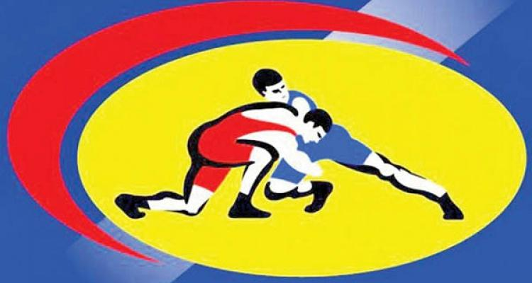
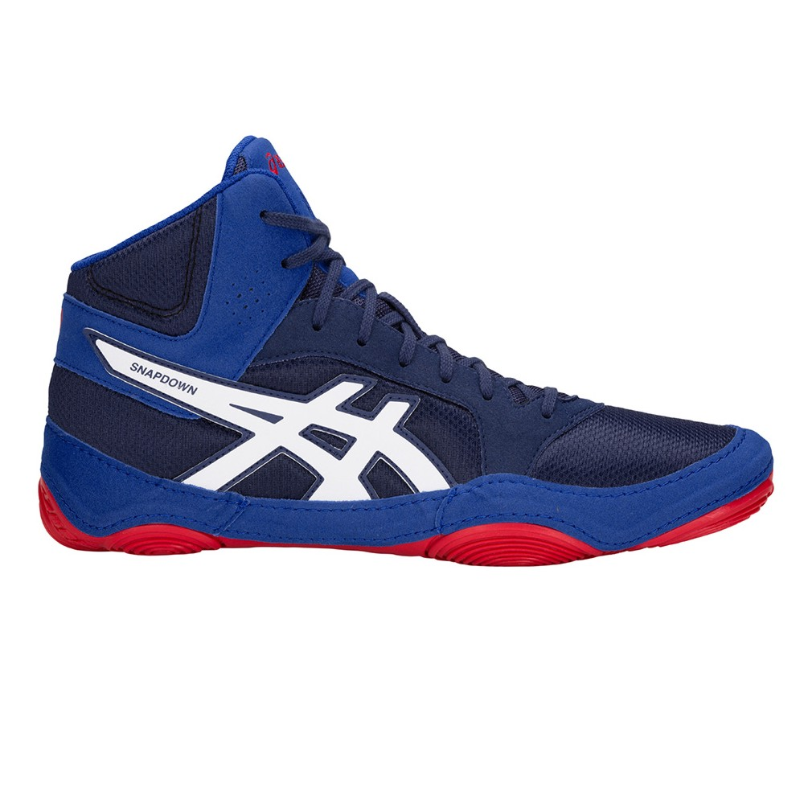
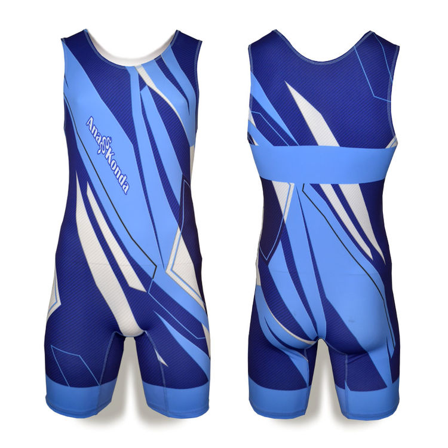

| 
Bільна боротьба Спорт | ||
Вільна боротьба | ||
|  | Борцовки - вид спортивного взуття, розробленої з урахуванням вимог і потреб борців для тренувань і виступів на змаганнях.Правила маркіза Куїнсберрі забороняли гострі носки на черевиках, і в ужиток увійшла взуття, зшите з цільного шматка шкіри. Вона була відносно легкої і надійної, дозволяла бійцеві міцно стояти на ногах. Згодом борцовки стали робити з високою халявою і шнурівкою на всю довжину, що дозволяло максимально ефективно фіксувати гомілку і уникати таких травм як вивих, розтягнення або переломи. Також борцовки розрізняються за типом матеріалу. Класичний матеріал - 100% шкіра - використовується рідко через дорожнечу матеріалу і складності догляду за нею. Найчастіше застосовуються комбіновані матеріали - нейлон, мікрофібра, замша, синтетика, шкіра. Головна вимога до підошви - хороше зчеплення з поверхнею, що запобігає ковзанню і ізносостойскость. Поширені матеріали для підошви боксёрок - гума та каучук. | |
Трико - трикотажний або в'язаний обтягуючий костюм для всього тіла - спортивний. |  | |
У цьому відео-ролику ви побачите найефективніші прийоми в історії світової боротьби |
Перелік видатних українських борців вільного стилю:
|